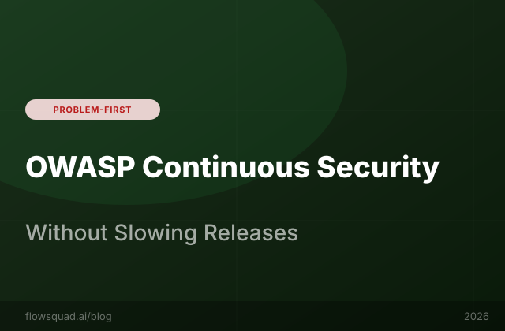

External pentests are point-in-time snapshots. FlowSquad scans every commit for OWASP Top 10 vulnerabilities — continuously, automatically, at near-zero cost.
Let's be precise about what a penetration test actually buys you. A professional external pentest conducted by a reputable firm gives you a detailed, expert-validated snapshot of your application's attack surface on the day the test was run. That snapshot is genuinely valuable — but its shelf life is measured in days, not months.
Consider the typical software development timeline:
The Verizon Data Breach Investigations Report consistently finds that the median time between vulnerability introduction and discovery exceeds 200 days. In a world where your pentest happens once a year, you have a 164-day window on average where vulnerabilities exist in production with no automated detection mechanism in place.
This isn't an argument against pentests — they're essential for compliance and for finding logic-level vulnerabilities that automated scanners miss. It's an argument for complementing them with continuous, automated scanning that catches the 80% of vulnerabilities that are patternable.
Continuous security scanning means that every time a developer pushes code — to a feature branch, a pull request, or main — a static analysis scan runs automatically and surfaces results before the code reaches production. This is fundamentally different from periodic scanning in three ways:
FlowSquad's Quick Scan and Deep Scan capabilities provide two tiers of continuous coverage. Quick Scan runs in under 60 seconds and catches the most common vulnerability patterns. Deep Scan performs a full semantic analysis — taking 3–8 minutes depending on codebase size — and surfaces complex, multi-file vulnerabilities including insecure data flows.
FlowSquad's quality scanning engine is built on Semgrep, the industry-standard static analysis framework, with a curated rule set mapped directly to the OWASP Top 10 (2021 edition). Here's how each category is covered:
| OWASP Category | FlowSquad Detection Method | Supported Languages |
|---|---|---|
| A01 — Broken Access Control | Authorization bypass patterns, missing auth decorators, direct object reference | Python, Java, JavaScript, TypeScript, Go |
| A02 — Cryptographic Failures | Hardcoded secrets, weak cipher detection, unencrypted PII transmission | All 11 languages |
| A03 — Injection (SQL, NoSQL, LDAP) | String concatenation in queries, ORM bypass patterns, unsanitised input | Python, Java, JS, TS, PHP, Ruby, Go |
| A05 — Security Misconfiguration | Debug mode in production, permissive CORS, exposed admin endpoints | Python, Java, JavaScript, TypeScript |
| A07 — Auth & Session Failures | Weak JWT validation, session fixation, missing CSRF protection | Python, Java, JavaScript, TypeScript, PHP |
| A09 — Logging Failures | Missing audit logs, credential logging, sensitive data in logs | All 11 languages |
FlowSquad supports 11 programming languages for code analysis: Python, JavaScript, TypeScript, Java, Go, Ruby, PHP, C, C++, Kotlin, and Rust. The Semgrep rule library is updated automatically as new CVEs and OWASP guidance is published.
# Example: FlowSquad scan finding (JSON output)
{
"finding_id": "FSQ-SEC-2847",
"severity": "HIGH",
"owasp_category": "A03:2021 - Injection",
"rule_id": "python.sqlalchemy.sql-injection-string-concat",
"file": "api/users/repository.py",
"line": 84,
"snippet": "query = f\"SELECT * FROM users WHERE email = '{email}'\"",
"message": "User-controlled input used in raw SQL query. Use parameterised queries instead.",
"remediation": "Use SQLAlchemy's text() with :param syntax or ORM query methods.",
"jira_ticket": null,
"auto_create_ticket": true
}Finding a vulnerability is only half the problem. The other half is ensuring it gets fixed — which means it needs to enter the team's existing workflow rather than dying in a separate security dashboard nobody checks.
FlowSquad's Jira integration enables one-click escalation from any scan finding to a properly structured Jira bug ticket. The ticket is pre-populated with:
security, owasp-[category], and the severity levelTeams can also configure automated ticket creation for findings above a threshold severity — so every HIGH or CRITICAL finding automatically appears in the backlog without human intervention. This closed-loop eliminates the most common failure mode in security programs: findings that are documented but never actioned.
| Approach | Annual Cost | Scan Frequency | Time to Detection | Findings Per Year |
|---|---|---|---|---|
| Annual External Pentest | $40,000–$150,000 | Once/year | Up to 364 days | ~30–80 (point-in-time) |
| Quarterly Pentest | $160,000–$600,000 | 4x/year | Up to 90 days | ~120–320 |
| FlowSquad Continuous Scan | Included in platform | Every commit | Minutes | Continuous coverage |
FlowSquad's security scanning is included in the platform subscription — there is no per-scan fee or separate SAST tool license required. For organisations currently paying for standalone SAST tools (Checkmarx, Veracode, Snyk at the code level), FlowSquad's integrated scanning represents a meaningful consolidation opportunity.
The real cost reduction, however, is in breach prevention. The IBM Cost of a Data Breach Report puts the average cost of a breach in 2024 at $4.88 million. Preventing a single high-severity vulnerability from reaching production easily justifies years of platform spend.
Not entirely — and we'd be doing you a disservice to suggest otherwise. For SOC 2, ISO 27001, and PCI-DSS compliance, external penetration tests conducted by certified professionals are required. FlowSquad's continuous scanning is a complementary control that provides coverage between mandated pentests and helps you arrive at each pentest with significantly fewer low-hanging-fruit findings — reducing pentest remediation time and cost.
Semgrep-based rules are tuned to minimise false positives, but no automated scanner is perfect. FlowSquad allows analysts to mark findings as "accepted risk" or "false positive" with a required justification note. These dismissals are logged in the audit trail with the reviewer identity and timestamp — satisfying SOC 2 evidence requirements for risk acceptance decisions.
Quick Scan runs a subset of high-confidence rules that execute in under 60 seconds — ideal for PR-gate checks. Deep Scan runs the full Semgrep rule set including data-flow analysis, inter-procedural analysis, and custom organisational rules. Deep Scan takes 3–8 minutes on codebases up to 500,000 lines and is recommended for nightly or pre-release scans.
Yes. FlowSquad's on-premise deployment supports fully air-gapped scanning. The Semgrep rule set is bundled with the platform and updated during scheduled maintenance windows. No code leaves your network — scanning runs entirely on your infrastructure. See our air-gapped deployment guide for setup details.
FlowSquad supports security scanning across 11 languages: Python, JavaScript, TypeScript, Java, Go, Ruby, PHP, C, C++, Kotlin, and Rust. Language coverage for OWASP categories varies — Python, JavaScript/TypeScript, and Java have the most comprehensive rule sets. Go, Kotlin, and Rust coverage focuses on injection, cryptographic failures, and memory safety issues respectively.